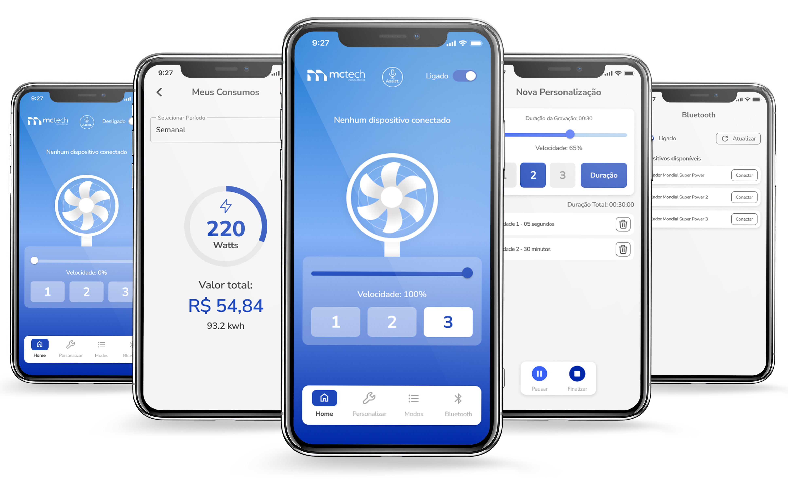

VentHome – Além do Vento
O VentHome surgiu do questionamento de como um ventilador poderia se adaptar organicamente ao nosso ritmo de vida moderno.
O VentHome não nasceu apenas como um controle remoto Bluetooth; ele surgiu do questionamento de como um objeto tão analógico quanto um ventilador poderia se adaptar organicamente ao nosso ritmo de vida moderno, especialmente no clima desafiador que conhecemos bem em Manaus.
Objetivo: O VentHome entrega mais que um controle: ele entrega autonomia. Ao permitir que o usuário crie sua própria curva de ventilação, transformamos um produto de prateleira em um serviço personalizado.

01. O Desafio: Humanizando a IoT
Como designer que transita entre a arquitetura e o digital, sempre me fascinou como a tecnologia pode transformar nossa percepção do ambiente. Identificamos que a frustração do usuário comum vinha da falta de personalização — o "médio" de um aparelho raramente é o "médio" ideal para todos.
02. Minha Atuação e Tomada de Decisão
Imersão e Empatia: Apliquei o Double Diamond não apenas como metodologia, mas como lente investigativa. Observei que a ventilação é situacional. Queria que o app entendesse o contexto.
Estratégia e Arquitetura: Minha bagagem em Design Systems influenciou a criação de uma estrutura escalável. O objetivo era criar uma hierarquia visual onde o status da conexão Bluetooth fosse onipresente, mas não intrusivo.
Craft e Interface: No desenvolvimento da UI, utilizei o Figma para prototipar interações que transmitissem leveza, usando whitespace para operar sem esforço.
North Star Metric: Design Centrado no Contexto
03. Decisões de Produto e Arquitetura
A base para uma interface conectada, escalável e não intrusiva:
- • Design Centrado no Contexto: Definimos categorias claras: Velocidades para controle direto, e Modos para automação.
- • Foco no Usuário: Introduzimos o "Modo Gamer" e o "Modo Bike", entendendo que o público tech e entusiastas de esportes indoor demandam uma experiência diferenciada de fluxo de ar.
- • O Visual: Optei por um layout limpo, onde o uso de espaços em branco (whitespace) permite que o usuário opere o app sem esforço visual, mesmo em ambientes com pouca luz.
- • Componentização: Cada modo foi tratado como um módulo independente, facilitando a implementação de novos contextos de uso no futuro.
Interface Showcase

04. Entrega, Visão de Futuro e Toolbox
O VentHome entrega autonomia. Este projeto reforçou minha capacidade de traduzir necessidades complexas de hardware para interfaces mobile intuitivas.
- • Transformação de um hardware comum em um ecossistema inteligente, elevando o valor percebido do produto e criando um diferencial competitivo claro em um mercado de commodities (ventiladores convencionais).
- • Entrega de uma interface intuitiva e adaptativa que elimina a frustração com controles remotos físicos limitados, oferecendo precisão no ajuste ambiental, customização e um modo noturno que preserva o ciclo circadiano do usuário.